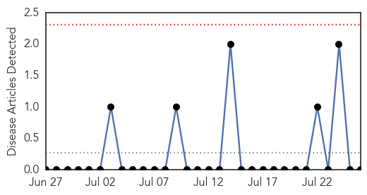
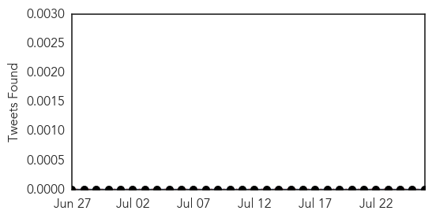
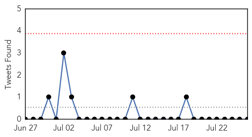
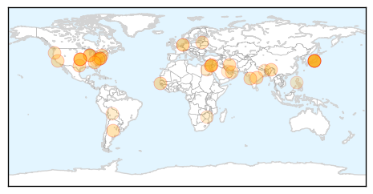

Mold/Fungal
30-Day Web Trend
0 alerts, 0 warnings

30-Day Twitter Trend
0 alerts, 0 warnings

Article Locations


Article Confidences

Top Articles:
-
No articles found for Jul 26, 2014
Top Tweets:
-
No tweets found for Jul 26, 2014
Unknown
30-Day Web Trend
4 alerts, 3 warnings

30-Day Twitter Trend
0 alerts, 0 warnings

Article Locations

Article Confidences

Top Articles:
- 0.978
- Observer
- 0.959
- Assam govt steps up measures to combat JE and AES
- 0.952
- Assam government steps up measures to combat encephalitis
- 0.952
- DVD claims three lives; 22 undergoing treatment
- 0.950
- Arunachal Pradesh Sounds High Alert After Encephalitis Death
- 0.945
- Greenville hospital to expand water filtration system to prevent infection
- 0.939
- Virus alerts Bengal ignored
- 0.917
- Chicago Tribune
- 0.917
- Chicago Tribune
- 0.917
- Chicago Tribune
- 0.917
- Chicago Tribune
- 0.917
- Chicago Tribune
- 0.917
- Chicago Tribune
- 0.917
- Chicago Tribune
- 0.917
- Chicago Tribune
- 0.917
- Chicago Tribune
- 0.917
- Chicago Tribune
- 0.879
- 3Qs: Global impact of the Ebola outbreak
- 0.866
- Rocket kills two children in Egypt near Gaza border -MENA
- 0.866
- Turkey, citing ceasefire, lifts flight ban to Israel's Ben Gurion airport
- 0.866
- Hamas agrees to 12-hour pause in Gaza fighting- spokesman
- 0.842
- Arunachal sounds high alert after encephalitis death
- 0.826
- GHS Installing New Water Filtration System
- 0.805
- Mamata Banerjee Suspends Three Health Officials for Failing to Report Encephalitis
- 0.804
- Lithuania to slaughter 20,000 pigs as swine fever spreads
- 0.785
- Where to go when you need a doctor after midnight in Dubai - Emirates 24
- 0.757
- A Newly Discovered Virus Is Lurking in Your Intestines
- 0.739
- WHO Calls for Humanitarian Corridor to Transport Gaza's Wounded
- 0.661
- Bengal seeks central help for encephalitis vaccination
- 0.651
- Twists endure in federal response to W.Va. spill
- 0.619
- Gov’t urged to ensure supply of arsenic-free rice
- 0.619
- GSK seeks approval for world's first malaria vaccine
- 0.615
- West Bengal government takes preventive measures to tackle Japanese encephalitis
- 0.605
- Bengal seeks central help for encephalitis vaccination
- 0.605
- Bengal seeks central help for encephalitis vaccination
- 0.590
- 'Kissing Bug' Disease Prompts Growing Concern in US
- 0.582
- New gut virus lives in half the world's population
- 0.577
- Politics as a resource for health
- 0.573
- Ignorance kills Zim women says health expert
- 0.521
- Drug-Resistant Superbug Increasing in Southeast U.S. Hospitals
Top Tweets:
-
No tweets found for Jul 26, 2014